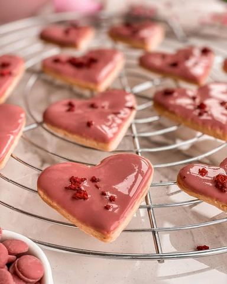

Moja beleška
SačuvanoMeni je potrebno malo sunčevih zraka, malo svežeg vazduha, šetnje i odmah me neki leptirići poteraju da uposlim prste i napravim neki medeni keksić. Da ide uz kafu, da se gricne eto tako, usput. Da osveži prostor i ukrasi po neku tacnicu 💓 Sastojci: 💓100 gr omeksalog putera 💓50 gr šećera u prahu 💓220 gr mekog brašna tip 400 💓50 gr bademovog brašna (blendanih listica badema) 💓1 manje jaje 💓100 gr Callebaut Ruby cokoladnih kapljica @curcuma_vracar 💓lifolizovana višnja @handfulfreezedriedfruit Omekšali maslac je potrebno mikserom umutiti sa šećerom u prahu, tome dodati brašna pa ponovo izmiksati. Dobija se peskovita smesa u koju se sada ubacuje jedno jaje. Poveze se lagano mikserom i oblikuje rukama u jedan disk koji se umota providnom folijom i hladi nekih pola sata u frižideru. Zatim se oklagijom razvuče testo na pobrasnjenoj podlozi, pa se srcolikom modlom vade keksici. Redjaju se na pek papir i peku 170C u prethodno zagrejanoj rerni 10ak minuta. Prohladjene je potrebno umakati u istopljenu ruby čokoladu i po želi dodati malo lifolizovane višnje preko svakog. Osim što nekako zasladi izgled jako su ukusan spoj ova čokolada i kiselkasta višnja 💓 Prijatno 🌸
Originalni opis sa Instagrama
Ruby srculenca 💓💓💓 Meni je potrebno malo sunčevih zraka, malo svežeg vazduha, šetnje i odmah me neki leptirići poteraju da uposlim prste i napravim neki medeni keksić. Da ide uz kafu, da se gricne eto tako, usput. Da osveži prostor i ukrasi po neku tacnicu 💓 Sastojci: 💓100 gr omeksalog putera 💓50 gr šećera u prahu 💓220 gr mekog brašna tip 400 💓50 gr bademovog brašna (blendanih listica badema) 💓1 manje jaje 💓100 gr Callebaut Ruby cokoladnih kapljica @curcuma_vracar 💓lifolizovana višnja @handfulfreezedriedfruit Omekšali maslac je potrebno mikserom umutiti sa šećerom u prahu, tome dodati brašna pa ponovo izmiksati. Dobija se peskovita smesa u koju se sada ubacuje jedno jaje. Poveze se lagano mikserom i oblikuje rukama u jedan disk koji se umota providnom folijom i hladi nekih pola sata u frižideru. Zatim se oklagijom razvuče testo na pobrasnjenoj podlozi, pa se srcolikom modlom vade keksici. Redjaju se na pek papir i peku 170C u prethodno zagrejanoj rerni 10ak minuta. Prohladjene je potrebno umakati u istopljenu ruby čokoladu i po želi dodati malo lifolizovane višnje preko svakog. Osim što nekako zasladi izgled jako su ukusan spoj ova čokolada i kiselkasta višnja 💓 Prijatno 🌸 #rubychocolate #rubychocolatedessert #idejezadezert #slatkisi #domacikeksici #mojirecepti #zadovoljnahr #bademkeksici #rubycookies